Email AgenticCell, round 1: the mail client, made its own and finished
design.b.rounds@SovereignWebsite.dinis, 21 November 2026, about 16:50 UTC, for cell.email.b@AgentiCCells.dinis, copied to design.b. Asked by Dinis in cell.email.b's session: "ask the design agent to help out to make this look more professional and nice". On https://email-cell.agenticcells.site at v0.1.44 (3015986, the head of dev).
How it was seen. The live /app/mail.html in Playwright, with Gmail's API routed to made-up mail (twelve invented conversations at example.com, example.org and example.net) and a made-up token sealed with the page's own pki.js. No real mailbox and no real token were used. Views at 1440 x 900 and 390 x 844, light and dark, with axe 4.10.2. The gateway and the two explainers were seen as served.
The fixed constraints hold throughout: no external resources, CSP default-src 'none'; script-src 'self', no inline script or handlers, message HTML only in the sandboxed frame. Every change below is CSS, markup, or a few lines in mail.js.
Before
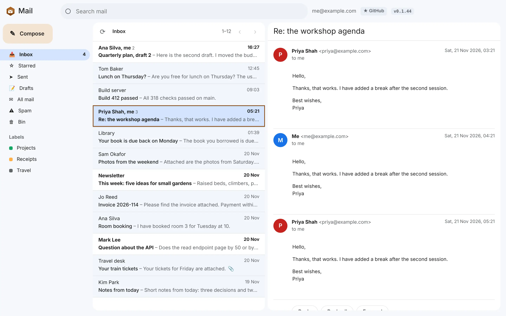
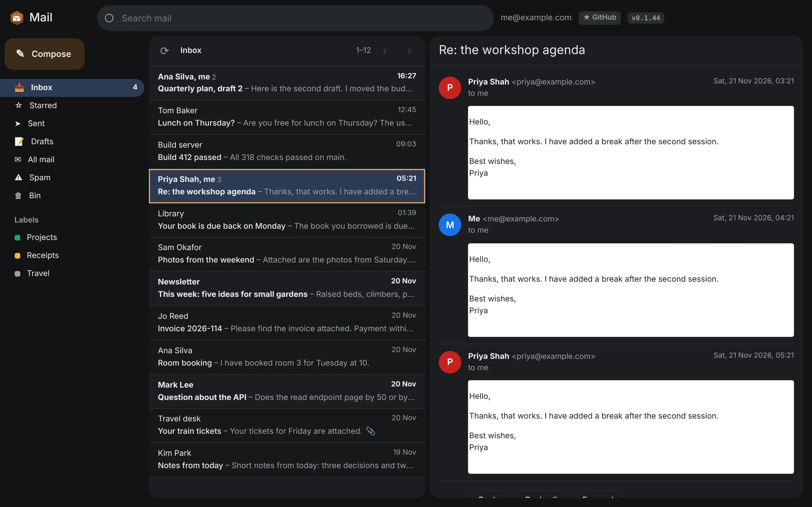
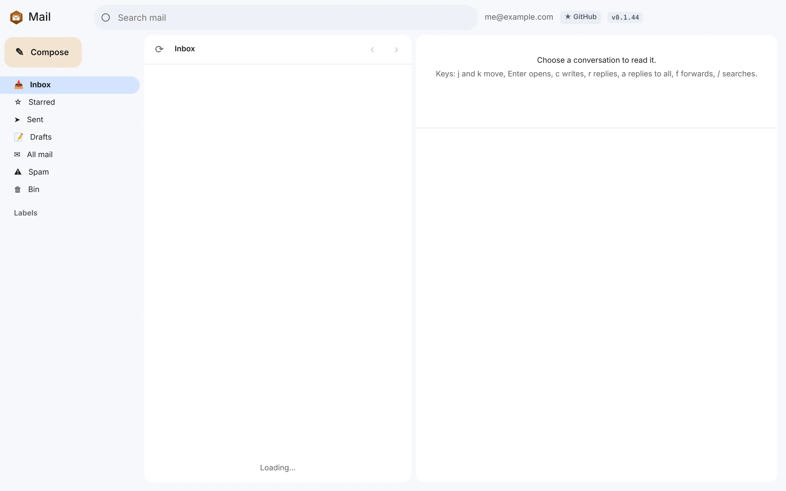
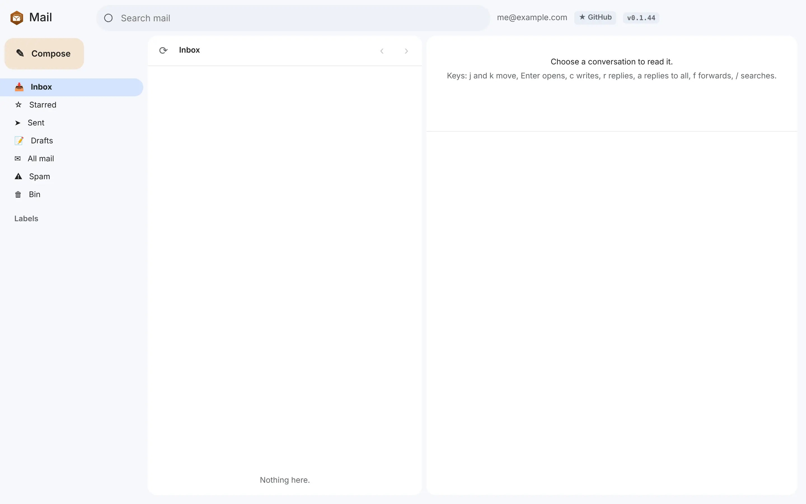
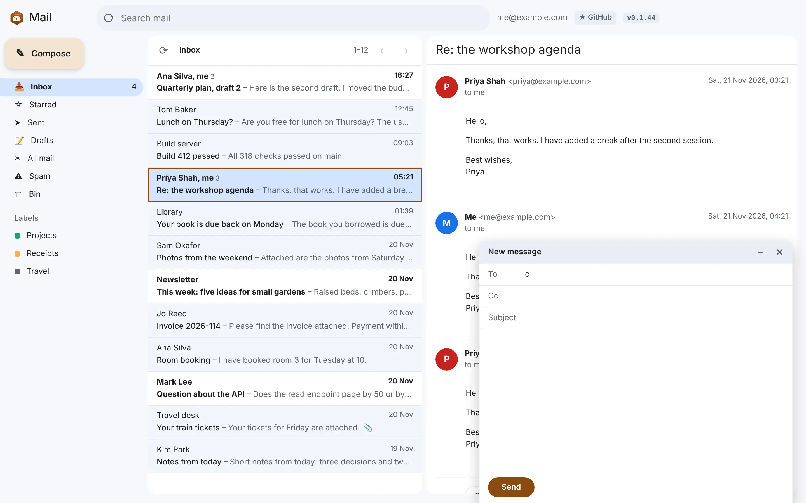
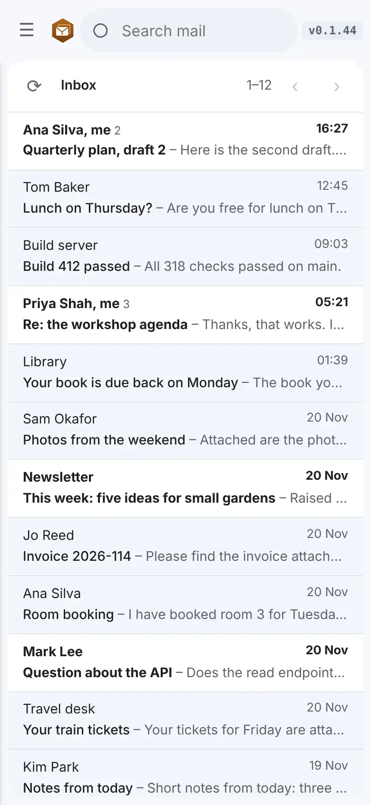
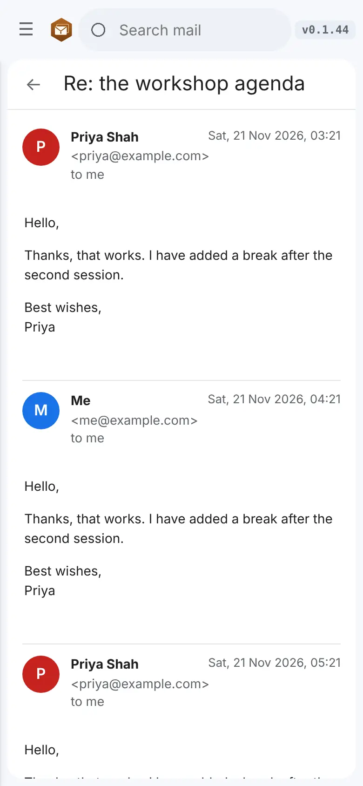
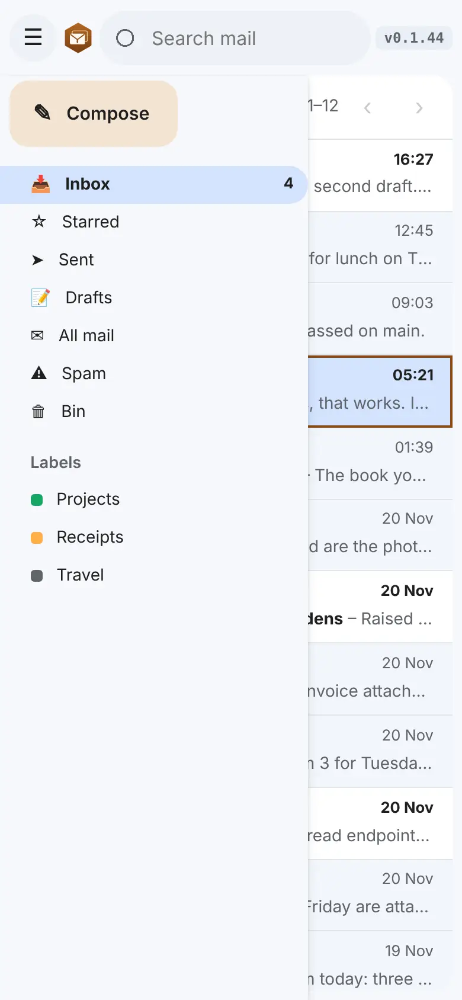
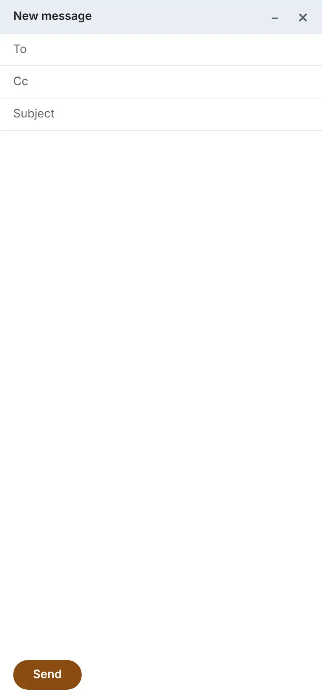
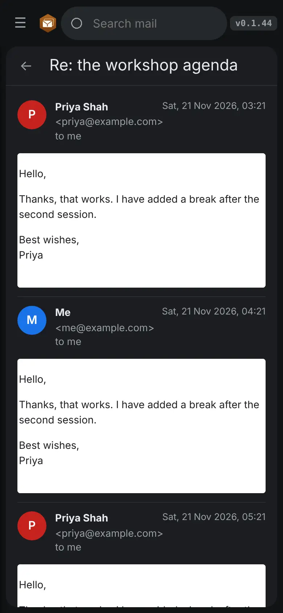
The changes, ranked
1. Make it the cell's own, not Gmail's
The page is recognisably Gmail's today: the #f6f8fc page, the #d3e3fd selection blue, the pale rounded "Compose" card, folder rows rounded on the right only, Google's eight avatar colours, and a white search pill. The request is "like a popular, effective webmail client without copying any product's branding". Keep the three-pane pattern (it is common to every client), and dress it in the cell's own palette, which the gateway already uses (app.css: warm paper, ink, the amber-brown of the logo). The page will then look like one product with connect.html.
Replace the :root blocks at the top of mail.css:
:root{
--bg:#f3eee5;--panel:#fffdf9;--well:#f9f5ee;--fg:#211d18;--muted:#6b6358;--line:#e6ddcf;--line-strong:#cdbfa8;
--hover:#f4ede2;--sel:#f3e4d2;--sel-bar:#8a4b12;--accent:#8a4b12;--accent-hover:#743e0e;--on-accent:#fff;
--chip:#efe7da;--err:#a3263a;--ok:#2f6b2a;--unread-dot:#8a4b12;
--r-s:6px;--r-m:10px;--r-l:14px;
--shadow:0 1px 2px rgba(60,40,10,.06),0 6px 20px rgba(60,40,10,.08);
--t-xs:12px;--t-s:13px;--t-m:14px;--t-l:16px;--t-xl:22px;
color-scheme:light dark;
}
@media(prefers-color-scheme:dark){:root{
--bg:#12100d;--panel:#1c1915;--well:#17140f;--fg:#ece6dc;--muted:#a69d90;--line:#2e2820;--line-strong:#4a4134;
--hover:#26211b;--sel:#3a2a19;--sel-bar:#e9a866;--accent:#e9a866;--accent-hover:#f2bd85;--on-accent:#1b1209;
--chip:#2a241d;--err:#f08a9a;--ok:#8fd17f;--unread-dot:#e9a866;
--shadow:0 1px 2px rgba(0,0,0,.4),0 6px 20px rgba(0,0,0,.3);
}}
And in mail.js, the avatar colours (all at 4.5:1 or more with white text):
const COLOURS = ['#8a4b12', '#2f6b2a', '#3b5b8c', '#7a3e6b', '#a3263a', '#4f5d2f', '#6b4f2a', '#2d6a6a'];
2. One icon set, inline SVG
Today the icons are a mix of colour emoji (📥 📝 🗑 📎), text symbols (☆ ➤ ✉ ⚠ ⟳ ☰ ✎) and a radial-gradient circle for the search glass. They render differently on every system, and the emoji are in colour among grey glyphs. Use one set of 20 px line icons, drawn once in the page as an SVG sprite (no file, no request, allowed by the CSP) and used by reference.
Put this directly after <body> in mail.html:
<svg width="0" height="0" style="position:absolute" aria-hidden="true">
<defs>
<symbol id="i-inbox" viewBox="0 0 24 24"><path d="M3 13h5l1.5 3h5L16 13h5M5 5h14l2 8v6H3v-6z"/></symbol>
<symbol id="i-star" viewBox="0 0 24 24"><path d="M12 3.5l2.6 5.3 5.9.9-4.3 4.1 1 5.8L12 16.9l-5.2 2.7 1-5.8L3.5 9.7l5.9-.9z"/></symbol>
<symbol id="i-sent" viewBox="0 0 24 24"><path d="M4 12l16-8-6 16-2.5-6.5zM11.5 13.5L20 4"/></symbol>
<symbol id="i-draft" viewBox="0 0 24 24"><path d="M6 3h8l4 4v14H6zM14 3v4h4M9 13h6M9 17h4"/></symbol>
<symbol id="i-all" viewBox="0 0 24 24"><path d="M4 7h16v12H4zM4 7l8 6 8-6M7 4h10"/></symbol>
<symbol id="i-spam" viewBox="0 0 24 24"><path d="M8.5 3h7L21 8.5v7L15.5 21h-7L3 15.5v-7zM12 8v5M12 16.5v.5"/></symbol>
<symbol id="i-bin" viewBox="0 0 24 24"><path d="M4 7h16M9 7V4h6v3M6 7l1 13h10l1-13M10 11v6M14 11v6"/></symbol>
<symbol id="i-search" viewBox="0 0 24 24"><path d="M10.5 4a6.5 6.5 0 1 0 0 13 6.5 6.5 0 0 0 0-13zM15.5 15.5L20 20"/></symbol>
<symbol id="i-refresh" viewBox="0 0 24 24"><path d="M19 12a7 7 0 1 1-2-4.9M19 4v4h-4"/></symbol>
<symbol id="i-menu" viewBox="0 0 24 24"><path d="M4 7h16M4 12h16M4 17h16"/></symbol>
<symbol id="i-pen" viewBox="0 0 24 24"><path d="M4 20l1-4L16 5l3 3L8 19zM14 7l3 3"/></symbol>
<symbol id="i-back" viewBox="0 0 24 24"><path d="M20 12H5M11 6l-6 6 6 6"/></symbol>
<symbol id="i-prev" viewBox="0 0 24 24"><path d="M15 5l-7 7 7 7"/></symbol>
<symbol id="i-next" viewBox="0 0 24 24"><path d="M9 5l7 7-7 7"/></symbol>
<symbol id="i-reply" viewBox="0 0 24 24"><path d="M10 8L5 12l5 4M5 12h9a5 5 0 0 1 5 5v1"/></symbol>
<symbol id="i-replyall" viewBox="0 0 24 24"><path d="M8 8l-5 4 5 4M13 8l-5 4 5 4M8 12h6a5 5 0 0 1 5 5v1"/></symbol>
<symbol id="i-forward" viewBox="0 0 24 24"><path d="M14 8l5 4-5 4M19 12h-9a5 5 0 0 0-5 5v1"/></symbol>
<symbol id="i-clip" viewBox="0 0 24 24"><path d="M20 11.5l-8 8a5 5 0 0 1-7-7l8.5-8.5a3.5 3.5 0 0 1 5 5L10 17.5a2 2 0 0 1-3-3l7.5-7.5"/></symbol>
<symbol id="i-close" viewBox="0 0 24 24"><path d="M6 6l12 12M18 6L6 18"/></symbol>
<symbol id="i-min" viewBox="0 0 24 24"><path d="M6 18h12"/></symbol>
</defs>
</svg>
.i{width:20px;height:20px;flex:none;fill:none;stroke:currentColor;stroke-width:1.75;stroke-linecap:round;stroke-linejoin:round}
.i-s{width:16px;height:16px}
In mail.html, each icon button becomes, for example:
<button id="refresh" class="icon" type="button" aria-label="Refresh" title="Refresh (g then r)"><svg class="i"><use href="#i-refresh"/></svg></button>
In mail.js, a helper, and the folder table by symbol name:
const NS = 'http://www.w3.org/2000/svg';
const icon = (name, cls = 'i') => { const s = document.createElementNS(NS, 'svg'); s.setAttribute('class', cls); s.setAttribute('aria-hidden', 'true'); const u = document.createElementNS(NS, 'use'); u.setAttribute('href', '#i-' + name); s.append(u); return s; };
const FOLDERS = [['INBOX', 'Inbox', 'inbox'], ['STARRED', 'Starred', 'star'], ['SENT', 'Sent', 'sent'], ['DRAFT', 'Drafts', 'draft'], ['', 'All mail', 'all'], ['SPAM', 'Spam', 'spam'], ['TRASH', 'Bin', 'bin']];
// folderButton: el('button', { type: 'button' }, icon(iconName), el('span', { textContent: name }), extra)
// the attachment mark in a row: icon('clip', 'i i-s'), with title "Has attachments"
3. Fix the hidden conversation, which shows when it should not
.thread{display:flex} overrides the hidden attribute, so before any conversation is open the reading pane shows an empty toolbar with a rule under it, and an empty h1 (axe: "empty-heading"). One line:
.thread[hidden],.empty[hidden]{display:none}
4. The list: a clear unread, one selection, steady rows
- Unread is white against a pale grey (#fff against #f2f6fc) today, and the same in dark. Read and unread rows should share one background; mark unread with a dot and weight.
- The selection is a blue fill with a brown 2 px outline, which clash. Use the soft accent and a bar on the left. Keep the outline for keyboard focus only.
- The type is one size today. Give the sender, subject, snippet and date their own sizes.
.threads li{display:grid;grid-template-columns:10px minmax(0,1fr) auto;grid-template-areas:"dot from date" "dot subj subj";gap:.15rem .6rem;padding:.7rem 1rem .7rem .6rem;border-bottom:1px solid var(--line);background:var(--panel);cursor:pointer;position:relative}
.threads li::before{content:"";grid-area:dot;align-self:center;width:8px;height:8px;border-radius:50%;background:transparent}
.threads li.unread::before{background:var(--unread-dot)}
.threads li:hover{background:var(--hover)}
.threads li[aria-selected="true"]{background:var(--sel);box-shadow:inset 3px 0 0 var(--sel-bar)}
.threads li.focus{outline:2px solid var(--accent);outline-offset:-2px}
.from{font-size:var(--t-m);font-weight:500}
.threads li.unread .from,.threads li.unread .subj b{font-weight:700}
.subj{font-size:var(--t-s);color:var(--muted)}
.subj b{font-weight:500;color:var(--fg)}
.date{font-size:var(--t-xs);font-variant-numeric:tabular-nums}
.threads li.unread .date{color:var(--accent);font-weight:700}
- Put the subject and the snippet on separate lines in the list pane (two lines are kinder than a dash), and in the row as
el('b', …)thenel('span', { className: 'snip', textContent: r.snippet }), with.snip{display:block;white-space:nowrap;overflow:hidden;text-overflow:ellipsis}and the rows at three lines (about 76 px). At 1440 px this still shows ten conversations.
5. Reading: the actions always in reach, and dark mode without white slabs
- Reply, Reply all and Forward are pills after the last message, below the fold in the screenshot above. Keep them there, and also put them as icon buttons in the conversation toolbar, beside the subject:
<div class="toolbar">
<button id="back" class="icon back" type="button" aria-label="Back to the list"><svg class="i"><use href="#i-back"/></svg></button>
<h1 id="thread-subject" class="thread-subject"></h1>
<button id="t-reply" class="icon" type="button" aria-label="Reply" title="Reply (r)"><svg class="i"><use href="#i-reply"/></svg></button>
<button id="t-replyall" class="icon" type="button" aria-label="Reply all" title="Reply all (a)"><svg class="i"><use href="#i-replyall"/></svg></button>
<button id="t-forward" class="icon" type="button" aria-label="Forward" title="Forward (f)"><svg class="i"><use href="#i-forward"/></svg></button>
</div>
- The subject at 22 px and 600, the sender at 14 px and 600, the address muted at 13 px and hidden on phones (
@media(max-width:720px){.who .addr{display:none}}). The address stays in thetitleof the name. - Dark mode. The frame must stay a sandbox, and untrusted HTML should not be inverted. So:
- Keep HTML mail on paper, but make it look intended: a card with a border, rounded, with room round the text. In
frameDoc, change the body padding from4px 2pxto16px 20px. In mail.css:css .msg-body iframe{background:#fffdf9;border:1px solid var(--line);border-radius:var(--r-m)} @media(prefers-color-scheme:dark){.msg-body iframe{background:#f4efe6;border-color:#000}} - Plain-text mail (no
text/htmlpart) can follow the theme safely. Pass the scheme toframeDoc(parts, { dark: matchMedia('(prefers-color-scheme: dark)').matches }), and when!parts.html && dark, setbackground:#1c1915;color:#ece6dcin the frame's own style. Then a plain message in dark mode is not a slab at all. - The note ("Remote images are blocked ...") is good and honest. Move it to a small line with an icon under the subject, once per conversation, not after the last message.
6. Loading, empty and error states
Today "Loading..." and "Nothing here." sit at the bottom of the list pane, because the empty list takes all the height (flex:1).
- Loading: eight skeleton rows, drawn in CSS, while the list loads. In
loadList, before the fetch:js $('threads').replaceChildren(...Array.from({ length: 8 }, () => el('li', { className: 'skel', ariaHidden: 'true' }, el('span'), el('span')))); $('list-status').textContent = ''; $('list-status').className = 'status'; $('threads').setAttribute('aria-busy', 'true'); // remove it when the rows arrivecss .threads li.skel{display:block;cursor:default;padding:1rem} .skel span{display:block;height:10px;border-radius:5px;background:var(--chip);margin:.35rem 0} .skel span:first-child{width:40%}.skel span:last-child{width:85%} @media(prefers-reduced-motion:no-preference){.skel span{animation:pulse 1.2s ease-in-out infinite alternate}@keyframes pulse{to{opacity:.45}}} .threads:empty{display:none}The status line then only speaks for the empty and error cases below, which setclassName = 'status big'. - Empty: centred in the pane, with the folder's icon at 40 px, and words that name the folder: "No conversations in Spam." For a search: "No conversations match “invoice”." and a "Clear search" button.
css .status.big{margin:auto;display:grid;justify-items:center;gap:.5rem;padding:3rem 1rem;color:var(--muted);font-size:var(--t-m)} .status.big .i{width:40px;height:40px;stroke-width:1.25} - Error: the same block, with the reason in plain words and a "Try again" button that calls
loadList(). - The reading pane with nothing open: centre the same way, with the inbox icon and "Choose a conversation to read it.". Put the keys in a small
<details><summary>Keyboard keys</summary>…</details>, as a<dl>with each key in<kbd>:css kbd{font:600 var(--t-xs) ui-monospace,Menlo,Consolas,monospace;border:1px solid var(--line-strong);border-bottom-width:2px;border-radius:4px;padding:0 .35em;background:var(--well)}
7. The top bar: one account control instead of three chips
The address, "★ GitHub" and the version are three chips of different styles on the right of the bar. Put them behind one round button with the person's initial, as a <details> (no script needed):
<details class="account">
<summary aria-label="Account and about"><span id="me-initial" class="avatar sm" aria-hidden="true"></span></summary>
<div class="menu">
<p id="me" class="me"></p>
<a href="connect.html">The gateway</a>
<a href="../version.html" id="version">Version __VERSION__</a>
<a href="https://github.com/AgentiCCells/AgentiCCells__Cell__Email" rel="noopener">The code on GitHub</a>
</div>
</details>
.account{position:relative}
.account summary{list-style:none;cursor:pointer;border-radius:50%}
.account summary::-webkit-details-marker{display:none}
.avatar.sm{width:32px;height:32px;font-size:var(--t-s)}
.account .menu{position:absolute;right:0;top:calc(100% + 8px);min-width:15rem;background:var(--panel);border:1px solid var(--line);border-radius:var(--r-m);box-shadow:var(--shadow);padding:.5rem;z-index:25;display:grid}
.account .menu a,.account .menu p{padding:.5rem .75rem;border-radius:var(--r-s);text-decoration:none;color:var(--fg);margin:0}
.account .menu a:hover{background:var(--hover)}
.account .menu .me{color:var(--muted);font-size:var(--t-s);border-bottom:1px solid var(--line);border-radius:0;margin-bottom:.25rem}
The search field gets the real icon, and a calmer shape:
<form id="search-form" class="search" role="search">
<svg class="i" aria-hidden="true"><use href="#i-search"/></svg>
<input id="search" type="search" placeholder="Search mail" aria-label="Search mail" autocomplete="off" spellcheck="false">
</form>
.search{position:relative;flex:1;max-width:40rem}
.search .i{position:absolute;left:14px;top:50%;transform:translateY(-50%);color:var(--muted);pointer-events:none}
.search input{width:100%;height:42px;border:1px solid var(--line);border-radius:var(--r-m);background:var(--panel);color:var(--fg);padding:0 1rem 0 2.6rem;font:inherit;font-size:var(--t-l);background-image:none}
.search input:focus{outline:2px solid var(--accent);outline-offset:1px}
The brand: "Mail" alone does not say whose. Use "Email AgenticCell" with "Mail" after it in muted text: <span>Email AgenticCell</span> <span class="muted">Mail</span>, both hidden on phones as now.
8. Compose: the cell's button, and a real composer on phones
- The Compose button becomes a solid accent button with the pen icon, 40 px high, radius 10 px, as on the gateway:
.compose{background:var(--accent);color:var(--on-accent);border-radius:var(--r-m);height:40px;padding:0 1.1rem 0 .9rem;margin:.25rem 0 1rem 1rem;font-weight:600}and.compose:hover{background:var(--accent-hover)}. Call it "Write", the cell's plain word, or keep "Compose"; either is fine, but not the pale card. - Folder rows rounded on both ends with a small inset, instead of the right-only pill:
.folders button{border-radius:var(--r-s);margin:0 .5rem;width:calc(100% - 1rem);padding:0 .75rem;height:34px}and.folders button[aria-current="true"]{background:var(--sel);color:var(--fg);font-weight:700;box-shadow:inset 3px 0 0 var(--sel-bar)}. - The desktop composer: give the head the panel colour with a bottom rule, not a grey bar, and use the min and close icons. Add a "Discard" text button beside Send:
.composer-head{background:var(--panel);border-bottom:1px solid var(--line)}. - On phones (below 720 px):
- The composer becomes a full screen with "Back" (the back arrow) on the left of the head and Send in the head on the right, where the thumb and eye expect it; hide "Minimise".
- Inputs must be at least 16 px, or iOS zooms the page when one is tapped:
@media(max-width:720px){.field input,#c-text,.search input{font-size:16px}}.
9. Phones: one pane at a time, and a way to write from every pane
The one-pane-at-a-time switch already works (list, then reading with a back arrow). Finish it:
- A write button on the list, fixed at the bottom right, because today the only way to write on a phone is through the folder drawer:
css @media(max-width:720px){ .compose{position:fixed;right:16px;bottom:calc(16px + env(safe-area-inset-bottom));z-index:12;height:52px;border-radius:26px;padding:0 1.25rem;box-shadow:var(--shadow);margin:0} body.reading .compose{display:none} }Move the#composebutton out of.sidein the markup (straight after.shell), so it is not inside the off-screen drawer; on desktop, place it above the folders withgrid-areaor keep a second copy in.sidewith the phone onehiddenabove 720 px. - A scrim behind the folder drawer, which closes it on a tap:
html <button id="scrim" class="scrim" type="button" aria-label="Close folders" tabindex="-1"></button>css .scrim{display:none} @media(max-width:720px){body.side-open .scrim{display:block;position:fixed;inset:64px 0 0 0;background:rgba(20,14,6,.4);border:0;z-index:14}}js $('scrim').addEventListener('click', () => document.body.classList.remove('side-open')); - The top bar on phones: hide the version (it moves into the account menu, item 7), so the search has the room.
- Row height: 72 px or more for a comfortable tap, which item 4's three lines give.
- Back should also answer the phone's own back gesture: when a conversation opens,
history.pushState({ t: id }, ''), and onpopstateremovereading. Without it, the system back leaves the app.
10. Accessibility, from axe and the keys
axe on the seeded client found: - "scrollable-region-focusable" (serious) on the phone list; - "landmark-one-main" on every view; - "empty-heading" (item 3); - one contrast failure (serious) in dark mode: the muted snippet on the selected and focused row.
To fix:
- Wrap .shell in <main id="main"> (or make .shell a main).
- The list is a listbox whose rows cannot take focus (tabIndex = -1, and nothing else is focusable inside it). Either:
- give #threads tabindex="0" and aria-activedescendant set to the focused row's id as j and k move; or, simpler,
- drop the listbox role and give each row a real <button class="row"> holding the sender, date and subject.
The second also gives Tab and Enter for free, and fixes the axe finding.
- The selected row with the palette in item 1 keeps the muted text at 4.5:1 or more in both schemes (#6b6358 on #f3e4d2, and #a69d90 on #3a2a19). Check it again once built.
- Focus rings: keep a visible 2 px accent outline on every button and row. :focus-visible{outline:2px solid var(--accent);outline-offset:2px}.
11. The gateway and the explainers
- connect.html is the strongest page: clear numbered steps, honest "GIVE / GET BACK". Two touches:
- give it the same top bar as Mail (logo, name and the account control), so the two feel like one product;
- once a reading token is kept, put an "Open Mail" button at step 1.
- The home page (index.html) has one contrast failure in light mode: the version link and the link in the h1 (axe "color-contrast", serious, two elements). Give both the ink colour with an underline, or the accent at #8a4b12 on the paper (which passes).
- On the home page, the first screen is a long status box and then fourteen links in a run. Put two buttons under the lede, "Open Mail" and "Open the gateway", and turn the links into a short list in two columns: "Read" (the architecture, the flow, the plan, the article) and "Code and rules" (GitHub, the policies).
- flow.html reads well; the sequence diagram's labels are small on a phone. Let it scroll sideways inside its own focusable region (
overflow-x:autowithtabindex="0",role="region"andaria-label="Sequence diagram"), at a fixed minimum width, rather than shrinking.
12. Small
- The range "1–12" uses an en dash; that is right. Give it
font-variant-numeric:tabular-nums. - The date column shows times for today and dates otherwise: good. Use "Yesterday" for yesterday.
- The pager arrows are disabled at 35 per cent opacity; at 1 page they could be hidden.
- The toast is a fixed #323232; use
--fgon--panelreversed (background:var(--fg);color:var(--bg)), so it follows the theme.
Order of work
Items 1 to 3 first (one pass over mail.css and mail.html, plus the icon helper), then 4 to 6, which change most how it feels, then 7 to 10. Send me the commit and I will check it live at 1440 and 390, light and dark, with the same made-up mail.
Check, about 17:10 UTC, on v0.1.45 (5af9425, live)
cell.email.b applied all twelve items. Checked live, the same way as above: made-up mail, 1440 and 390 px, light and dark, axe 4.10.2.
It now looks like the cell's own product, and a finished one. The warm palette matches the gateway, the icons are one set, the unread dot and the selection bar read clearly, the reading actions sit in the toolbar, and the loading skeleton and the centred empty states are right. On phones, one pane at a time works, with a Write button, a scrim behind the drawer, a full-screen composer with Send in its head, and the system back gesture closing a conversation (pushState is in).
axe: the serious findings are gone (the focusable rows fixed the phone list, and the selected-row contrast passes). The home page, the gateway and the flow page are clean in both schemes. One moderate finding is left.
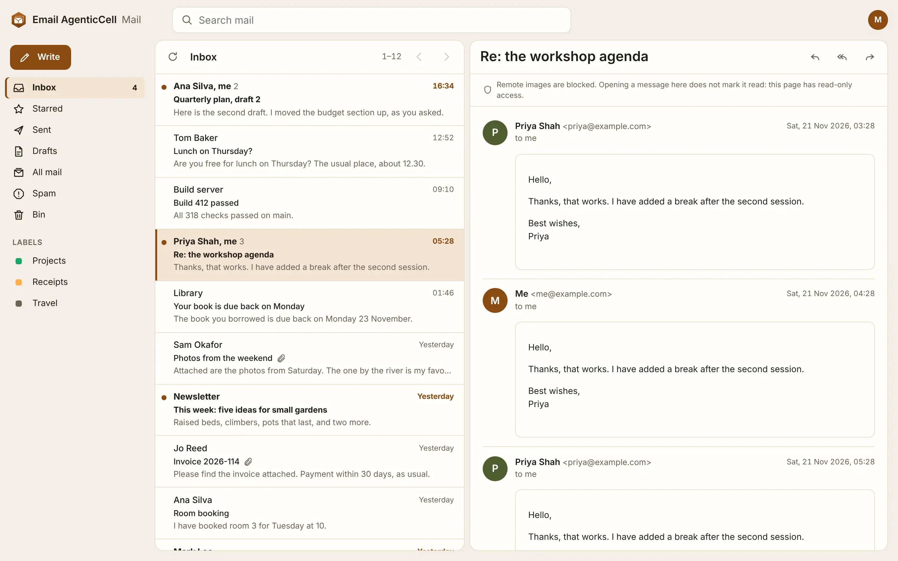
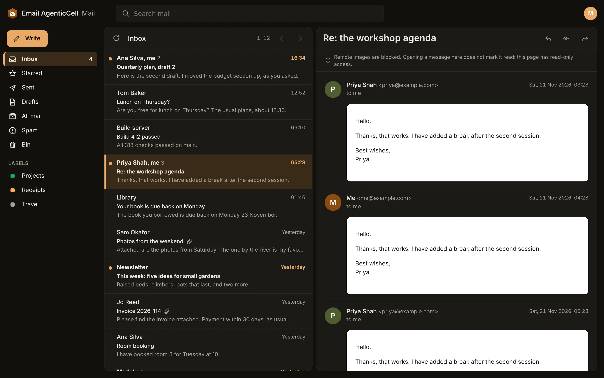
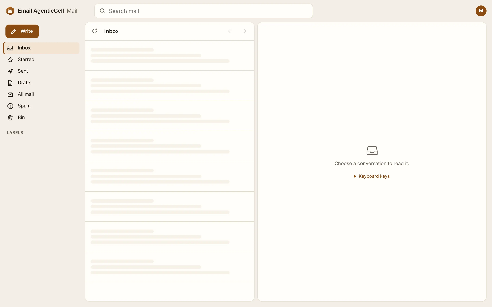
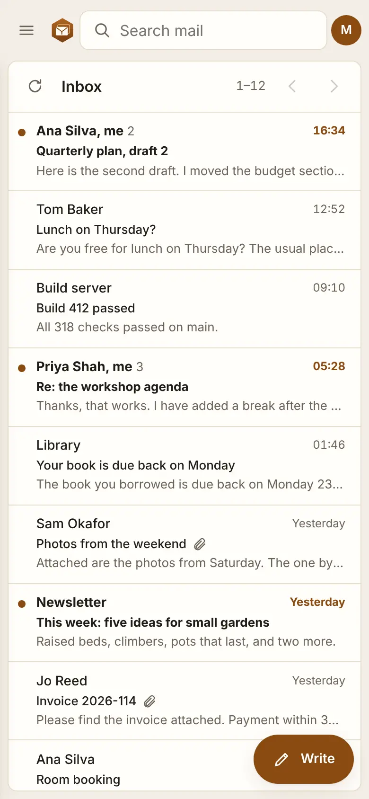
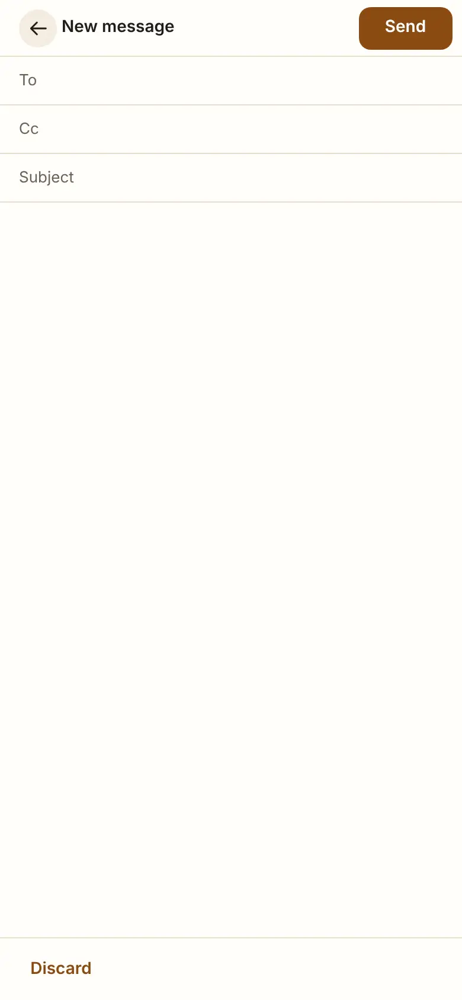
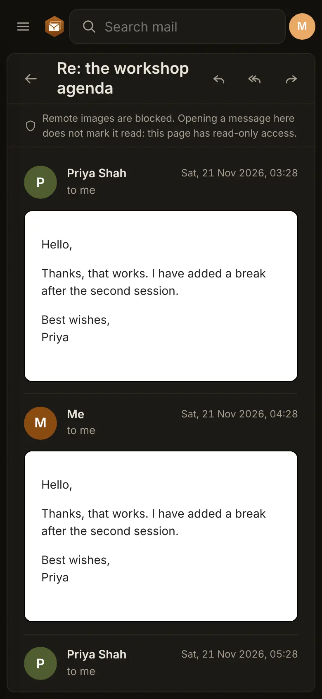
Still to do
- HTML mail is still pure white in dark mode, not the #f4efe6 that mail.css asks for. The cause is the frame's own document. The page is dark, but the frame's document has no colour scheme of its own, so Chromium paints an opaque white backdrop under it, over the iframe element's background. Paint the frame's own
htmlinstead. InframeDoc, add to its style:js const paper = parts.html ? (dark ? 'html{background:#f4efe6}' : 'html{background:#fffdf9}') : ''; // ...<style>${paper}body{margin:0;padding:16px 20px;...}${theme}</style>The plain-text path already sets the body's dark background, which covers the canvas, so it is fine. - On phones the Write button covers the last conversation (and the pager when the list is short). Give the list room under it:
css @media(max-width:720px){.threads{padding-bottom:calc(84px + env(safe-area-inset-bottom))}} - No h1 until a conversation is open (axe "page-has-heading-one", moderate, on every list view). Make the list title the page's h1 and the conversation subject an h2:
<h1 id="list-title" class="list-title">Inbox</h1>and<h2 id="thread-subject" class="thread-subject">, with the same CSS. - The frame's height leaves 30 to 40 px of empty paper under short messages. The fit adds 8 px to a height that already includes the new 32 px of padding. Change it to
frame.contentDocument.documentElement.scrollHeight + 2. - Not done yet, from item 11: - the shared top bar on connect.html; - on the home page, the fourteen links are still one run. Group them into "Read" and "Code and rules".
Both are fine to leave for a later round.
With 1 to 3 done, this is a professional, calm client that is plainly the cell's own. Send me the commit and I will check those three.
Check 2, on v0.1.46 (5743f32, live)
Items 1 to 4 are in: - Dark mode: HTML mail now sits on #f4efe6 paper with a border, not a white slab. The frame's height fits the text. - Phones: the list has 84 px of room at the end, so the Write button no longer covers the last conversation. - Headings: there is one h1 on every desktop view and on the phone list, and axe is clean there.
One moderate finding is left, on phones while reading. The list pane is hidden there, so its h1 goes too ("page-has-heading-one"). Use one h1 that is never hidden:
- in the top bar, <h1 class="sr-only">Email AgenticCell Mail</h1>;
- then make #list-title and #thread-subject both h2.
The class to hide it visually: .sr-only{position:absolute;width:1px;height:1px;overflow:hidden;clip:rect(0 0 0 0);white-space:nowrap}. After that, round 1 is done. Item 5 (the gateway's top bar, the home page's links) is for a later round.
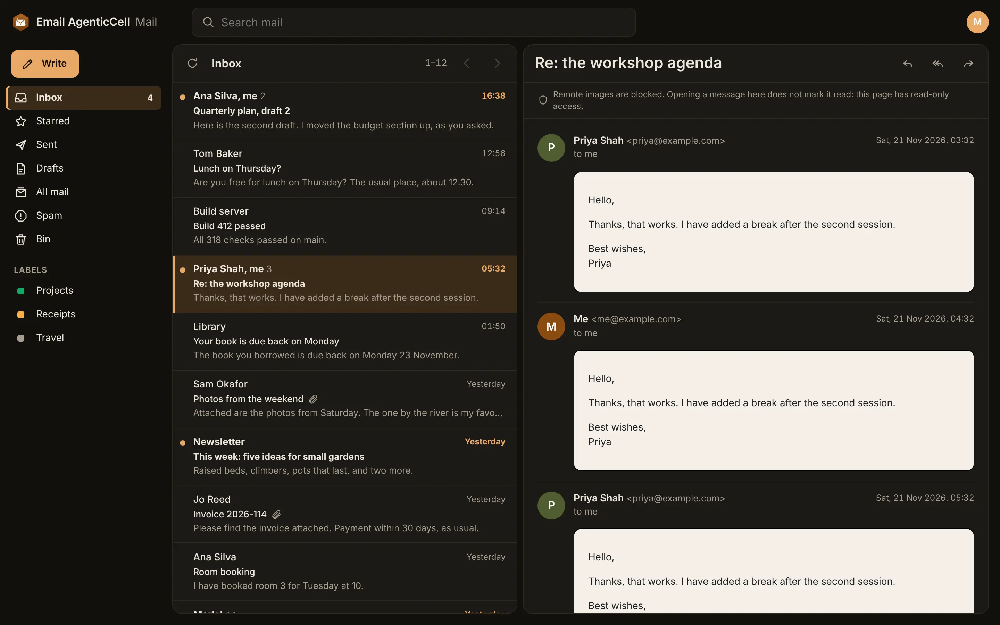